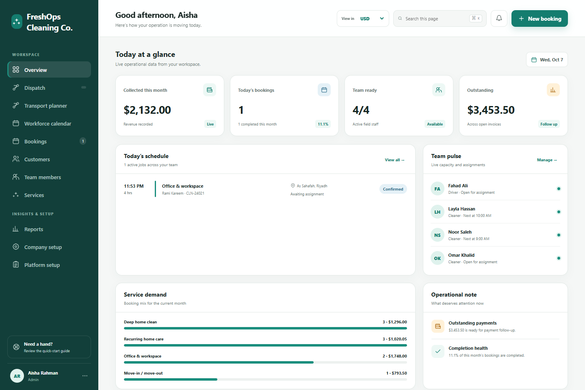

Independent project / FreshOps
From a booking
to a day of operations.
A multi-company operations platform connecting customers, service bookings, staff capacity, dispatch, and payments for a cleaning business.
- My contribution
- Full stack operations platform and business workflows
- Engineering focus
- Company isolation, scheduling, pricing, and dispatch
- Built with
- ASP.NET Core · PostgreSQL · JavaScript · Entity Framework Core


01 / Context
The problem
A service booking affects more than a calendar. It needs the right price, an available team, a clear job status, and a payment record. Those pieces need to agree as the day changes.
02 / Ownership
My contribution
I built a responsive workspace covering customer records, services, bookings, teams, dispatch, pricing, payments, and reporting. Its multi-company foundation supports role-based access and configurable terminology, fields, forms, and workflows.
- Create the customer booking and calculate its service price.
- Check team availability, assign staff, and coordinate dispatch.
- Track the job lifecycle, payment, and operational history.
03 / Engineering
Decisions behind the interface
Keep each company’s work in its own context
Company-scoped data and permission checks form the foundation of the workspace. Custom roles grant explicit access to the capabilities a team needs.
Preserve the price of an existing booking
Booking rate snapshots keep historical totals stable when currency rates change. Authorized manual totals require an audit reason, keeping exceptional pricing traceable.
Make configuration a controlled change
Company-owned configuration moves through draft, validation, and publication. Versioned manifests and a last-valid-revision fallback let business rules evolve around the existing Cleaning template.
04 / Outcome
What the project delivers
The platform brings scheduling, customer history, dispatch, financial records, and setup into a connected workspace. Its demo dashboard provides a real view of the implemented interface.